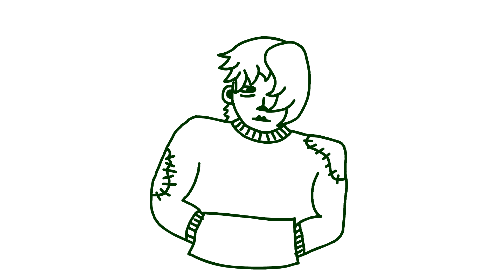
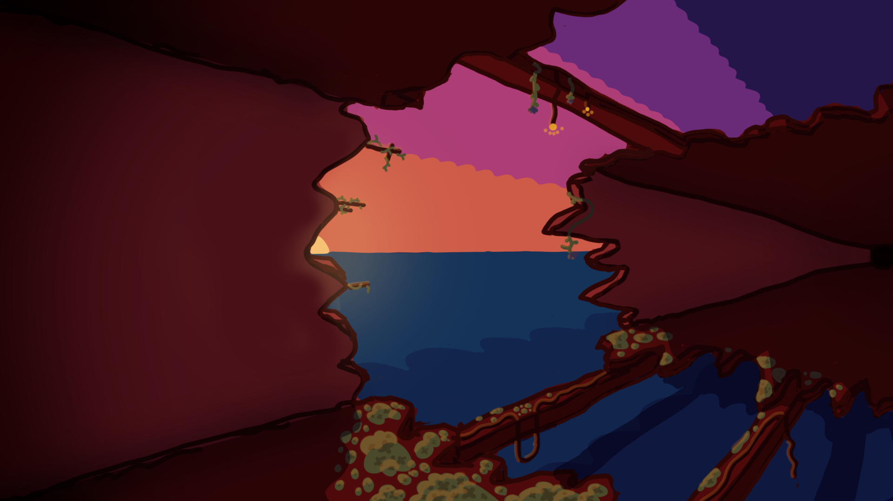
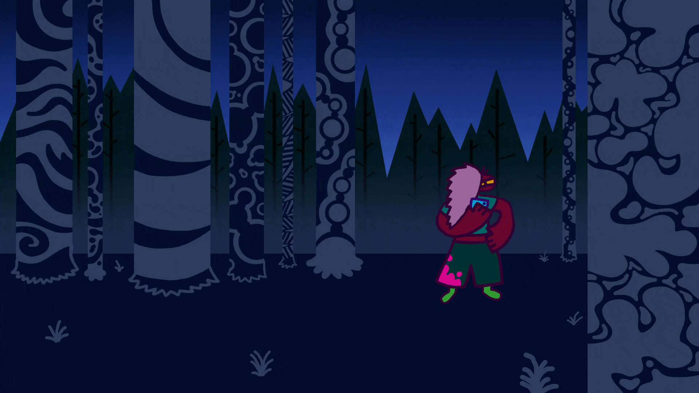

2D Design
This class really opened my eyes to just how involved the animation process is! I knew that animation couldn't be easy, but having to draw and color every individual frame of an animation really gave me a deeper appreciation for the medium.
If you can, make sure to show some support for animation unions, and support indie animation!


